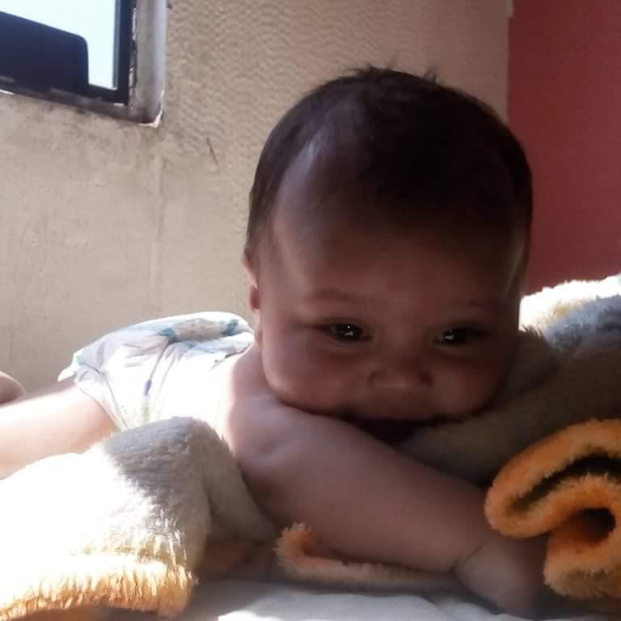

Proyecto de Vida
Etapas

Mi Gestacion:
La Noticia
Una etapa significativa en mi vida se remonta a cuando mi madre, a pesar de ser bastante joven, recibió la noticia de que iba a convertirse en madre. A pesar de su juventud, ella recuerda con gran felicidad el momento en que se enteró de mi llegada. Según ella, estaba convencida de que iba a tener una niña y ya tenía incluso un nombre preparado: 'Sheila Dayana'. Sin embargo, mi tío intervino y sugirió otro nombre. Aunque en ese momento pudo haber sido un pequeño contratiempo para mi madre, ahora reconozco que fue un acto de cuidado y consideración. Agradezco sinceramente a mi tío por su intervención, ya que el nombre que finalmente recibí ha llegado a definirme de una manera que no habría sido posible de otra manera. Esta etapa temprana de mi vida ilustra la importancia de las decisiones y cómo incluso los pequeños detalles pueden tener un impacto significativo en el curso de nuestra historia personal.
Cambios de Humor
Durante ese tiempo, ella experimentó cambios emocionales significativos, volviéndose notablemente irritable en ocasiones y mostrando un humor terrible. Aunque estos momentos difíciles eran frecuentes, mi madre siempre menciona con cariño el período en el que tenía antojos como su tiempo favorito. Durante esos momentos, su estado de ánimo parecía transformarse, mostrando una faceta más relajada y feliz. Recuerdo cómo ella solía contarme historias divertidas sobre sus antojos más extravagantes y cómo disfrutaba de esos pequeños placeres durante esa etapa. A pesar de los desafíos emocionales que enfrentó, el embarazo también fue un período de conexión especial entre mi madre y yo, y sus recuerdos de antojos siempre estarán asociados con una sensación de alegría y complicidad.
Cambios Fisicos
Entre estos cambios, uno de los más notables fue el aumento de peso. A pesar de esto, mi madre siempre recuerda con afecto y confianza en sí misma este momento. Para ella, el aumento de peso no era una preocupación, ya que estaba centrada en el milagro de la maternidad y en prepararse para dar la bienvenida a su hijo/a al mundo. Este período no solo marcó un cambio en su cuerpo, sino también un cambio en su perspectiva sobre la belleza y la importancia de aceptarse a sí misma tal como era. A través de su actitud positiva y su amor incondicional, mi madre me enseñó la importancia de valorar la belleza interior y la confianza en uno mismo, incluso en medio de los cambios físicos.
Baby Shower
Durante este evento, asistieron numerosas personas que vinieron a compartir su alegría y a traer una variedad de regalos para mí. Fue un momento lleno de amor y emoción mientras todos esperábamos con ansias conocer mi género. Fue durante este baby shower que se reveló que iba a ser una niña, lo que llenó la habitación de alegría y anticipación. Para mi madre, este evento no solo fue una celebración de mi llegada, sino también una muestra del afecto y el apoyo de amigos y familiares que estaban emocionados de dar la bienvenida a una nueva integrante a la familia. El baby shower se convirtió en un recuerdo precioso que simbolizaba el amor y la anticipación que rodeaban mi llegada al mundo.

Mi Infancia:
1-2 años
Entre el primer y segundo año, cuando comencé a dar mis primeros pasos. Según mi madre, logré este hito del desarrollo al año de edad, lo cual fue motivo de gran alegría y orgullo para mis padres. Sin embargo, durante este tiempo, también enfrenté un desafío de salud. Debido a la displasia de caderas, necesité usar un aparato ortopédico para corregir esta condición. A pesar de este obstáculo, mis padres y yo enfrentamos esta situación con determinación y optimismo. El aparato ortopédico no solo representaba un tratamiento para mejorar mi salud, sino también un símbolo de la fortaleza y el amor de mi familia. A través de este desafío, aprendí importantes lecciones sobre la resiliencia y el apoyo mutuo, sentando las bases para futuras experiencias de superación y crecimiento.
3-4 años
Comencé mi educación formal al ingresar al jardín de infancia. Este fue un momento emocionante lleno de nuevas experiencias y descubrimientos. Al dar mis primeros pasos en el entorno escolar, experimenté un mundo de aprendizaje y socialización que amplió mi horizonte. Recuerdo con cariño los días de juego, las actividades creativas y las interacciones con mis compañeros y maestros. El jardín de infancia no solo fue un lugar para adquirir conocimientos académicos básicos, sino también un espacio donde desarrollé habilidades sociales, emocionales y motoras fundamentales para mi desarrollo. Esta etapa temprana en mi educación sentó las bases para mi amor por el aprendizaje y mi crecimiento personal, marcando el inicio de un viaje educativo que continuaría a lo largo de mi vida.
5-6 años
Una etapa memorable en mi vida ocurrió entre los 5 y 6 años, donde comencé a recordar claramente algunos eventos significativos. A los 5 años, mi familia organizó una fiesta para celebrar mi cumpleaños, y fue una ocasión llena de diversión y alegría. Recuerdo con cariño cómo mis seres queridos se esforzaron por hacer de ese día algo especial para mí, con juegos, regalos y delicioso pastel. Fue una experiencia que quedó grabada en mi memoria como un momento de felicidad y conexión con mis seres queridos.
Sin embargo, también hubo un acontecimiento difícil durante este período. A los 6 años, tuve un accidente que resultó ser complicado. Aunque los detalles exactos pueden ser borrosos, recuerdo claramente la sensación de miedo y confusión que experimenté. Fue un momento desafiante tanto para mí como para mi familia, pero juntos enfrentamos la situación con valentía y determinación. A través de este incidente, aprendí sobre la importancia del apoyo mutuo y la resiliencia en tiempos difíciles. Aunque fue un período complicado, también fue una lección de vida que me ayudó a crecer y a valorar la fortaleza de los lazos familiares.
7-8 años
Entre los 7 y 8 años, cuando experimenté el nacimiento de mi hermano Camilo. Este fue un momento emocionante y transformador para mí, ya que me convertí en hermano mayor por primera vez. Recuerdo vívidamente la sensación de emoción y responsabilidad que sentí al recibir la noticia de su llegada. Desde el momento en que vi a mi hermano por primera vez, sentí un profundo vínculo con él y un deseo innato de cuidarlo y protegerlo. Me comprometí a ser un hermano mayor cariñoso y dedicado, y disfruté cada momento que pasaba con él. Desde ayudar a cambiar sus pañales hasta jugar juntos y enseñarle nuevas cosas, me sentí orgulloso de ser su guía y compañero. El nacimiento de mi hermano no solo enriqueció mi vida familiar, sino que también me brindó la oportunidad de aprender importantes lecciones sobre el amor, la paciencia y la responsabilidad. Ser hermano mayor fue una experiencia enriquecedora que contribuyó en gran medida a mi crecimiento personal y a la formación de fuertes lazos familiares que perduran hasta el día de hoy.
9-10 años
A los nueve años, cada día era una nueva aventura llena de juegos y risas con mis amigos de la cuadra. Pasábamos horas explorando el vecindario, inventando historias increíbles y compartiendo secretos que solo nosotros entendíamos. Era una época mágica donde la inocencia y la imaginación reinaban sin límites. Sin embargo, cuando llegué a los diez años, mi vida dio un giro inesperado y maravilloso con el nacimiento de mi hermano Samuel. La casa se llenó de alegría y alboroto con su llegada. Desde el primer momento que lo vi, supe que mi vida nunca volvería a ser la misma. Descubrí un amor profundo y especial que solo un hermano puede traer.
11-12 años
A los 11 años, mi vida dio un giro significativo cuando comencé el bachillerato. Este nuevo capítulo no solo significaba un cambio en mi educación, sino también en mis relaciones sociales. De repente, me encontré hablando con más personas, haciendo nuevos amigos y descubriendo diferentes perspectivas de la vida. Pero eso no fue todo. Al mismo tiempo, tuve la oportunidad de ir a vivir con mi abuela y mi tío. Esta experiencia no solo me brindó un nuevo hogar, sino que también me permitió fortalecer mis lazos familiares y aprender de su sabiduría y amor incondicional.